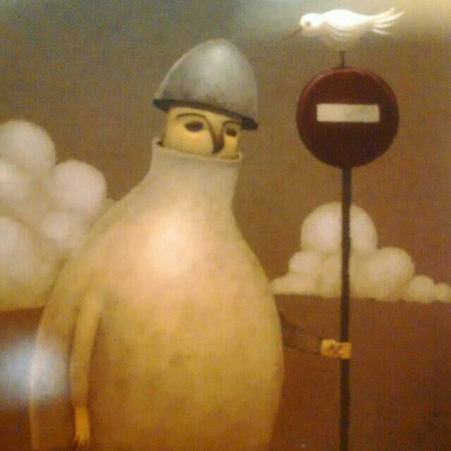

Luni-4
A multimedia and computer scientist rookie.
I’m Michele, nice to meet you!
As a computer scientist, I really like doing stuff related to video compression formats and programming languages.
In my spare time, I usually play D&D 5.0 with my friends and others collaborative games.
What I dislike, you say? Habits and fashion, they are so boring!